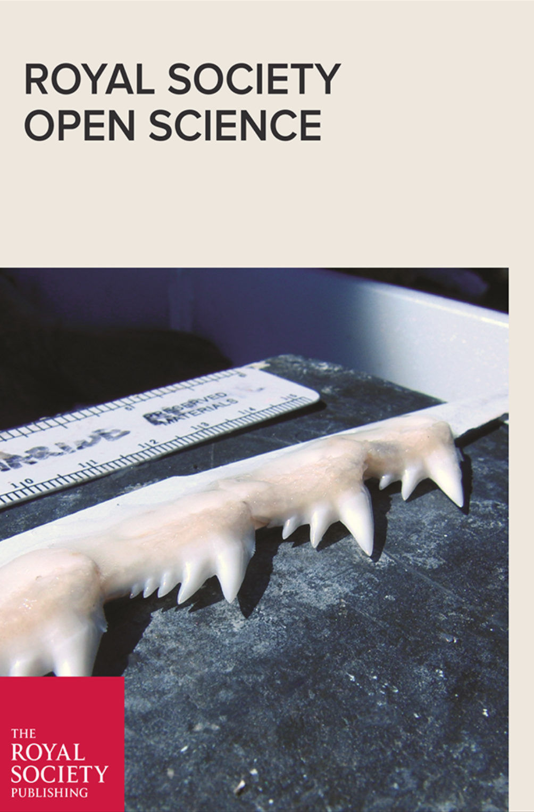

Publications
Published Manuscripts
Satterfield, D.R and Johnson, D.W., 2020. Local adaptation of antipredator behaviors in populations of a temperate reef fish. Oecologia 1:14. doi: 10.1007/s00442-020-04757-y
Johnson, D.W., Stirling, B.S., Paz, J. and Satterfield, D.R., 2019. Geographic variation in demography of black perch (Embiotoca jacksoni): Effects of density, food availability, predation, and fishing. Journal of Experimental Marine Biology and Ecology, 516:16-24. doi: 10.1016/j.jembe.2019.04.008
Satterfield, D.R. and Steele, M.A., 2019. Effects of size and sex on the courting success and foraging behaviour of Embiotoca jacksoni. Journal of fish biology, 95:472-479.doi: 10.1111/jfb.13981
Manuscripts in Progress
 Corn, K.A., C.M. Martinez, E.D. Burress, P.C. Wainwright. A trade-off shapes rates of evolution of fish feeding mechanisms. in revision for Evolution.
Friedman, S.T., S.A. Price, K.A. Corn, O. Larouche, C.M. Martinez, P.C. Wainwright. Body shape diversification along the benthic-pelagic axis in marine fishes. in review for Proceedings of the Royal Society B: Biological Sciences.
Larouche, O., B. Benton, B., K.A. Corn, S.T. Friedman, D. Gross, M. Iwan, B. Kessler, C.M. Martinez, S. Rodriguez, H. Whelpley, P.C. Wainwright, S.A. Price. Reef-associated fishes have more maneuverable body shapes at a macroevolutionary scale. in review at Coral Reefs.